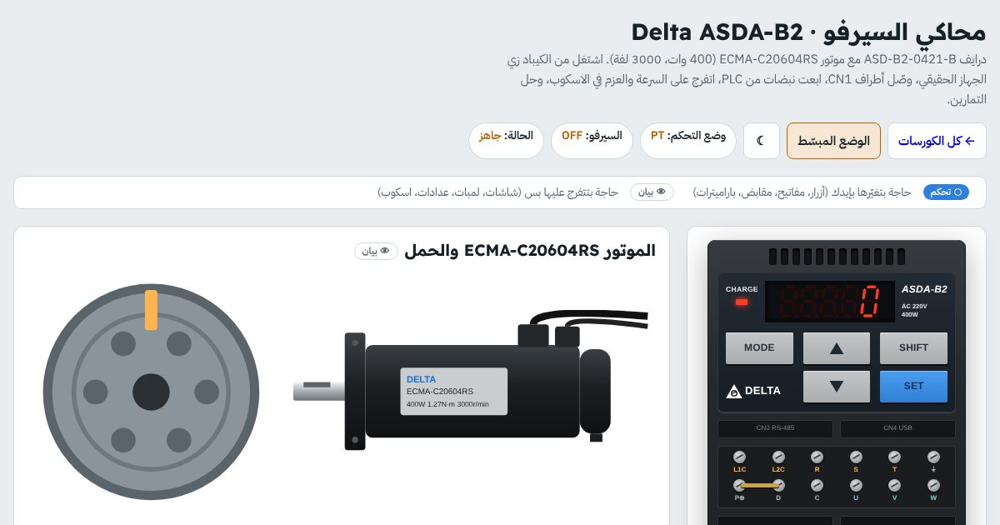

كورس · 4 محاكيات سيرفوبالعربي
كورس السيرفو
تشغّل السيرفو من الكيباد ومن PLC، وتظبط الجير والجين، وتحل الإنذارات على ماكينات بتتحرك قدّامك.
أول درسين والدرس 6 في كورس الشرح مفتوحين للكل، ومحاكيات السيرفو بتتفتح مع الكورس

الخطوة 1
ابدأ بالشرح: كورس السيرفو موتور والدرايف
12 درس تفاعلي بيفهّمك السيرفو قبل ما تمسك الكيباد. وبعده الخطوة 2: المحاكيات.
- يعني إيه سيرفو؟مفتوح للكل
- السيرفو = موتور + درايف + إنكودر
- لوب مفتوح ولوب مقفول
- محاكيجرّب: ستيبر قدّام سيرفو
- سيرفو ولا ستيبر ولا انفرتر؟
- تمريناختار الموتور المناسب
- أسئلةأسئلة الدرس
- جوه السيرفو موتورمفتوح للكل
- موتور بمغناطيس دائم (PMSM)
- افتح الموتور
- تمرينقطاع في سيرفو موتور
- الفرامل: للمسك مش للوقف
- قراية اليافطة
- تمريناقرا اليافطة
- أسئلةأسئلة الدرس
- الإنكودر: عين السيرفو
- ليه الإنكودر أهم حتة؟
- إنكريمنتال ولا أبسليوت؟
- محاكيجرّب: اقطع الكهربا
- الريزولوشن: كام عدّة في اللفة؟
- تمريناحسب الريزولوشن
- أسئلةأسئلة الدرس
- الدرايف من جوه
- دايرة القوى: زي الانفرتر بالظبط
- الكنترول: 3 لوبات جوه بعض
- تمرينالدرايف من جوه (دوس على البلوكات)
- رتّب مسار الإشارة
- تمرينمن الأمر للموتور ورجوع
- أسئلةأسئلة الدرس
- توصيل السيرفو
- الباور: L1 L2 L3
- الموتور: U V W و PE — الترتيب…
- الإنكودر والفرامل ومقاومة الفرملة
- الكنترول: CN1 و STO
- محاكيوصّل الدرايف بإيدك
- أسئلةأسئلة الدرس
- أوضاع التشغيلمفتوح للكل
- 4 أوضاع أساسية
- جرّب الأوضاع الأربعة
- محاكيمحاكي الأوضاع
- أشكال النبضات
- تمريناقرا النبضات
- أسئلةأسئلة الدرس
- الجير الإلكتروني
- المشكلة: الـ PLC بيفكّر بالمللي والإنكودر بالعدّات
- القانون في خطوتين
- الحاسبة والتحدّي
- تمرينحاسبة الجير الإلكتروني
- تمارين حساب سريعة
- تمريناحسب
- أسئلةأسئلة الدرس
- التيونينج وضبط الجين
- التيونينج يعني إيه؟
- الجينات والأعراض
- جرّب: Auto-tune وبعدين بإيدك
- تمرينضبط الجين على حمل حقيقي
- أسئلةأسئلة الدرس
- الهومينج والحدود
- الهومينج: نقطة الصفر
- الحدود: 3 طبقات حماية
- تمرينمحور بول سكرو بحساسات
- أسئلةأسئلة الدرس
- التحكم من الـ PLC
- 3 طرق الـ PLC يكلّم بيها الدرايف
- النبضات: التردد وأنواع الخرج
- محاكيمحاكي: PLC بيبعت نبضات
- الشبكات الصناعية
- تمريناختار طريقة التحكم
- أسئلةأسئلة الدرس
- الأعطال الشائعة
- الإنذار بيقولك فين تدوّر
- تجربة: Overvoltage على الوقفة
- تمرينالـ DC bus وقت الفرملة
- لعبة الأعطال
- تمرينحالات من المصانع
- أسئلةأسئلة الدرس
- التشغيل لأول مرة + الامتحان
- تشغيل سيرفو جديد لأول مرة
- تمرينرتّب خطوات التشغيل
- الخطوة الجاية: المحاكيات
- امتحانالامتحان النهائي
الكورس بالأرقام
4محاكيات سيرفو من 4 ماركات
6تمارين محلولة خطوة بخطوة
4خطوات في كل تمرين: توصيل وباراميترات وتشغيل وعطل
100باراميتر تقريبًا في محاكي Delta
السيرفو
إنت هتتعلّم إيه
- توصّل الدرايف والموتور والإنكودر وأطراف CN1
- تختبر الموتور بـ JOG من الكيباد قبل أي PLC
- تشغّل وضع السرعة بأمر 0–10V والسرعات الداخلية
- تبعت نبضات Pulse + Direction من PLC وتحسب الجير الإلكتروني
- تستخدم وضع PR للمواضع الجاهزة ووضع العزم T
- تظبط الجين مع حمل تقيل وتشوف شكل الحركة
- تأمّن محور رأسي بحساسات النهاية والطوارئ والفرامل
- تفهم الإنذارات وتحلّها زي الحقيقة
المحتوى
الخطوة 2: التمارين المحلولة
كل تمرين 4 خطوات: التوصيل، الباراميترات، التشغيل، وجرّب عطل. دي تمارين محاكي Delta ASDA-B2.
- اختبار JOG من الكيبادتتأكد إن الموتور والإنكودر سليمين قبل ما توصل PLC
- وضع السرعة S بأمر 0-10V على V-REFسرعة من إشارة أنالوج والسيرفو يمسك بـ SON
- وضع النبضات PT: Pulse + Direction من PLCالجير الإلكتروني: كام نبضة = لفة
- وضع PR: مواضع جاهزة بتتختار بالمداخلمواضع مكتوبة في الدرايف بتتنفّذ بإشارة
- وضع العزم T: شد ثابت بأمر T-REF وحد سرعةعزم ثابت على سير مع حد للسرعة
- محور رأسي: حساسات النهاية والطوارئ والفراملإزاي الحمل ما يقعش لما السيرفو يفصل
المحاكيات في الكورس ده
افتح أي محاكي من هنا أو من جوه الكورس.
لمين
مين الكورس ده ليه
- لفنيين ومهندسين الصيانة في خطوط الإنتاج والتغليف
- لمبرمجين الـ PLC اللي محتاجين يفهموا الدرايف من جوه
- لطلبة الميكاترونيكس والتحكم
- بعد ما تخلّص الانفرترات
أسئلة بتتكرر
قبل ما تسأل
محتاج أعرف انفرتر الأول؟
مش شرط، بس هيسهّل عليك كتير. الباراميترات والأطراف والأعطال فكرتها قريبة.
أنهي ماركات موجودة؟
Delta ASDA-B2 و Mitsubishi MR-JE و Yaskawa Sigma-7 و Allen-Bradley Kinetix 300، وكل واحد بكيباده وشاشته.
محتاج حساب؟
أيوه، محاكيات السيرفو محتاجة حساب مجاني تعمله في ثواني بإيميلك، وتقدّمك بيتحفظ فيه.
هل الباراميترات مطابقة للمانيوال؟
الأرقام مكتوبة للتدريب وممكن يكون فيها فرق عن الإصدار اللي معاك. قبل أي إعداد على ماكينة حقيقية، راجعه على مانيوال الشركة.
ينفع على الموبايل؟
ينفع، والخطوات الموجّهة معمولة تشتغل على الموبايل.
جاهز تبدأ السيرفو؟
أول درسين والدرس 6 مفتوحين للكل، والكورس كله بمحاكياته بيتفتح لما تشتريه. ادخل دلوقتي وكمّل على راحتك، وتقدّمك بيتحفظ.